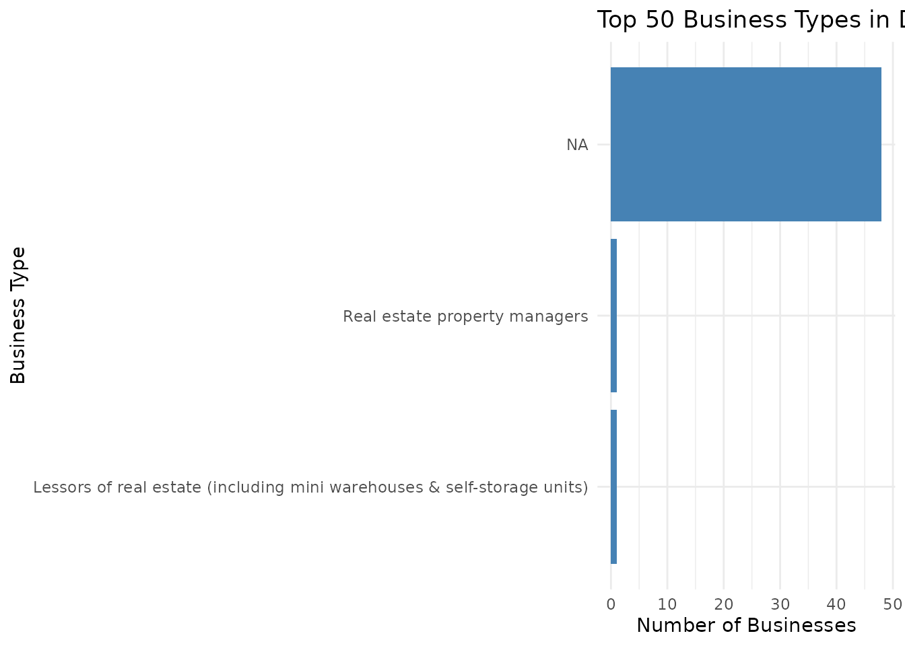

Getting Started with laOpenData
Christian Martinez
Source:vignettes/getting-started.Rmd
getting-started.Rmd
knitr::opts_chunk$set(warning = FALSE, message = FALSE)
library(laOpenData)
library(ggplot2)
library(dplyr)
#>
#> Attaching package: 'dplyr'
#> The following objects are masked from 'package:stats':
#>
#> filter, lag
#> The following objects are masked from 'package:base':
#>
#> intersect, setdiff, setequal, unionIntroduction
Welcome to the laOpenData package, an R package
dedicated to helping R users connect to the Los Angeles Open Data Portal!
The laOpenData package provides a streamlined interface
for accessing Los Angeles’ vast open data resources. It connects
directly to official City of Los Angeles open data portals, including
datasets hosted across Socrata-powered city domains, helping users
bridge the gap between raw city APIs and tidy data analysis. This
package is part of a broader ecosystem of open data tools designed to
provide a consistent interface across cities. It does this in two
ways:
The la_pull_dataset() function
The primary way to pull data in this package is the
la_pull_dataset() function, which works in tandem with
la_list_datasets(). You do not need to know anything about
API keys or authentication.
The first step would be to call the la_list_datasets()
to see what datasets are in the list and available to use in the
la_pull_dataset() function. This provides information for
thousands of datasets found on the portal.
la_list_datasets() |> head()
#> # A tibble: 6 × 96
#> key id name attribution attributionLink category createdAt dataUpdatedAt
#> <chr> <chr> <chr> <chr> <chr> <chr> <chr> <chr>
#> 1 my_l… 2cy6… MyLA… City of Lo… https://myla31… City In… 2026-01-… 2026-04-13T0…
#> 2 city… rwwd… City… Youth Deve… https://ydd.la… NA 2026-01-… 2026-01-09T2…
#> 3 lahd… cr8f… LAHD… Los Angele… NA Communi… 2025-11-… 2025-12-29T1…
#> 4 x202… mt59… 2025… NA NA Housing… 2025-09-… 2026-01-27T2…
#> 5 lahd… ci3m… LAHD… NA NA Communi… 2025-09-… 2025-09-11T1…
#> 6 lahd… n9x9… LAHD… Los Angele… NA Communi… 2025-09-… 2025-09-11T2…
#> # ℹ 88 more variables: dataUri <chr>, description <chr>, domain <chr>,
#> # externalId <lgl>, hideFromCatalog <lgl>, hideFromDataJson <lgl>,
#> # license <chr>, metadataUpdatedAt <chr>, provenance <chr>, updatedAt <chr>,
#> # webUri <chr>, approvals <list>, tags <list>,
#> # `customFields.Committed Update Frequency.Refresh rate` <chr>,
#> # `customFields.Location Specified.Does this data have a Location column? (Yes or No)` <chr>,
#> # `customFields.Location Specified.What geographic unit is the data collected?` <chr>, …The output includes columns such as the dataset title, description,
and link to the source. The most important fields are the dataset
key and id. You need either
in order to use the la_pull_dataset() function. You can put
either the key value or id value into the
dataset = filter inside of
la_pull_dataset().
For instance, if we want to pull the dataset
Building and Safety - Vacant Building Abatement, we can use
either of the methods below:
la_building_safety_vacant <- la_pull_dataset(
dataset = "q3ak-s5hy", limit = 2, timeout_sec = 90)
la_building_safety_vacant <- la_pull_dataset(
dataset = "building_and_safety_vacant_building_abatement", limit = 2, timeout_sec = 90)No matter if we put the id or the key as
the value for dataset =, we successfully get the data!
The la_any_dataset() function
The easiest workflow is to use la_list_datasets()
together with la_pull_dataset().
In the event that you have a particular dataset you want to use in R
that is not in the list, you can use the la_any_dataset().
The only requirement is the dataset’s API endpoint (a URL provided by
the Los Angeles Open Data portal). Here are the steps to get it:
- On the Los Angeles Open Data Portal, go to the dataset you want to work with.
- Click on “Export” (next to the actions button on the right hand side).
- Click on “API Endpoint”.
- Click on “SODA2” for “Version”.
- Copy the API Endpoint.
Below is an example of how to use the la_any_dataset()
once the API endpoint has been discovered, that will pull the same data
as the la_pull_dataset() example:
la_motor_vehicle_collisions_data <- la_any_dataset(json_link = "https://data.lacity.org/resource/q3ak-s5hy.json", limit = 2)Rule of Thumb
While both functions provide access to Los Angeles Open Data, they serve slightly different purposes.
In general:
- Use
la_pull_dataset()when the dataset is available inla_list_datasets() - Use
la_any_dataset()when working with datasets outside the catalog
Together, these functions allow users to either quickly access the datasets or flexibly query any dataset available on the Los Angeles Open Data portal.
Real World Example
Los Angeles has a lot of people, and just as many businesses, and the
list of active businesses in LA is contained in the dataset, found
here. In R, the laOpenData package can be used to pull
this data directly.
By using the la_pull_dataset() function, we can gather
information on these businesses, and filter based upon any of the
columns inside the dataset.
Let’s take an example of 3 requests that occur in the actual city of
Los Angeles. The la_pull_dataset() function can filter
based off any of the columns in the dataset. To filter, we add
filters = list() and put whatever filters we would like
inside. From our colnames call before, we know that there
is a column called “city” which we can use to accomplish this.
la_businesses <- la_pull_dataset(dataset = "6rrh-rzua",limit = 3, timeout_sec = 90, filters = list(city = "LOS ANGELES"))
la_businesses
#> # A tibble: 3 × 16
#> location_account business_name street_address city zip_code
#> <chr> <chr> <chr> <chr> <chr>
#> 1 0003301266-0001-1 WEST OF HOLLYWOOD, INC. 2608 AIKEN AVENUE LOS … 90064-3…
#> 2 0002772430-0001-9 GISELLE LUZA STUDIO, LLC 5500 HOLLYWOOD BL… LOS … 90028-6…
#> 3 0002173704-0001-5 ATLANTIC RECOVERY SERVICES 5306 N FIGUEROA S… LOS … 90042-4…
#> # ℹ 11 more variables: location_description <chr>, mailing_address <chr>,
#> # mailing_city <chr>, mailing_zip_code <chr>, naics <dbl>,
#> # primary_naics_description <chr>, council_district <dbl>,
#> # location_start_date <dttm>, location_1_latitude <dbl>,
#> # location_1_longitude <dbl>, location_1_human_address <chr>
# Checking to see the filtering worked
la_businesses |>
distinct(city)
#> # A tibble: 1 × 1
#> city
#> <chr>
#> 1 LOS ANGELESSuccess! From calling the la_businesses dataset we see
there are only 3 rows of data, and from the distinct() call
we see the only location featured in our dataset is LOS ANGELES.
One of the strongest qualities this function has is its ability to filter based off of multiple columns. Let’s put everything together and get a dataset of 50 businesses that occur in LOS ANGELES in council district 8.
# Creating the dataset
la_businesses_8 <- la_pull_dataset(dataset = "6rrh-rzua", limit = 50, timeout_sec = 90, filters = list(city = "LOS ANGELES", council_district = 8))
# Calling head of our new dataset
la_businesses_8 |>
slice_head(n = 6)
#> # A tibble: 6 × 17
#> location_account business_name street_address city zip_code
#> <chr> <chr> <chr> <chr> <chr>
#> 1 0002810621-0001-9 NANCY'S CLEANING SERVICES 1742 W 64TH ST… LOS … 90047-1…
#> 2 0003318926-0001-1 RINKA SHIRAISHI 4214 W 62ND ST… LOS … 90043-3…
#> 3 0002824469-0001-9 JOSE CRUZ 3114 W 59TH ST… LOS … 90043-3…
#> 4 0003170618-0001-1 BULLHEAD CITY INN CORPORATION 10918 S FIGUER… LOS … 90061-1…
#> 5 0002859001-0001-3 ASIA HAMILTON 8953 RUTHELEN … LOS … 90047-3…
#> 6 0002482305-0001-2 LISA M NIXON 6106 KENISTON … LOS … 90043-3…
#> # ℹ 12 more variables: location_description <chr>, mailing_address <chr>,
#> # mailing_city <chr>, mailing_zip_code <chr>, council_district <dbl>,
#> # location_start_date <dttm>, dba_name <chr>, naics <dbl>,
#> # primary_naics_description <chr>, location_1_latitude <dbl>,
#> # location_1_longitude <dbl>, location_1_human_address <chr>
# Quick check to make sure our filtering worked
la_businesses_8 |>
summarize(rows = n())
#> # A tibble: 1 × 1
#> rows
#> <int>
#> 1 50
la_businesses_8 |>
distinct(city)
#> # A tibble: 1 × 1
#> city
#> <chr>
#> 1 LOS ANGELES
la_businesses_8 |>
distinct(council_district)
#> # A tibble: 1 × 1
#> council_district
#> <dbl>
#> 1 8We successfully created our dataset that contains 50 requests regarding the businesses in district 8 of LA.
Mini analysis
Now that we have successfully pulled the data and have it in R, let’s
do a mini analysis on using the primary_naics_description
column, to figure out what are the main types of businesses
To do this, we will create a bar graph of the business types.
# Visualizing the distribution, ordered by frequency
la_businesses_8 |>
count(primary_naics_description) |>
ggplot(aes(
x = n,
y = reorder(primary_naics_description, n)
)) +
geom_col(fill = "steelblue") +
theme_minimal() +
labs(
title = "Top 50 Business Types in District 8 of LA",
x = "Number of Businesses",
y = "Business Type"
)
Bar chart showing the frequency of business types in LA in district 8.
This graph shows us not only which businesses are in the area, but how many of each there are.
Summary
The laOpenData package serves as a robust interface for
the Los Angeles Open Data portal, streamlining the path from raw city
APIs to actionable insights. By abstracting the complexities of data
acquisition—such as pagination, type-casting, and complex filtering—it
allows users to focus on analysis rather than data engineering.
As demonstrated in this vignette, the package provides a seamless workflow for targeted data retrieval, automated filtering, and rapid visualization.
How to Cite
If you use this package for research or educational purposes, please cite it as follows:
Martinez C (2026). laOpenData: Convenient Access to Los Angeles Open Data API Endpoints. R package version 0.1.0, https://martinezc1.github.io/laOpenData/.